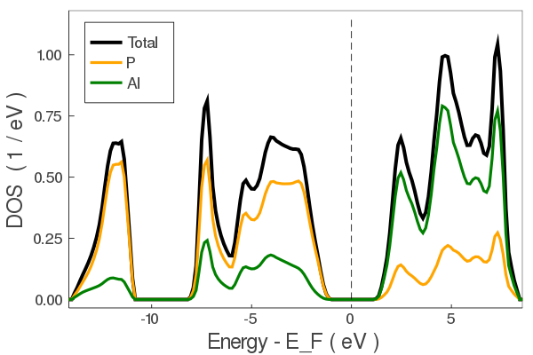

Running tight-binding calculations
How to run tight-binding calculations using the pre-fit tight-binding coefficients. Note, only elemental and binary systems are currently supported.
Running a julia function for the first time will compile the function. Future runs will be much faster.
Create a crystal object
Consists of lattice vectors, atomic positions, and atom types.
using TightlyBound
A = [2.1 2.1 0.0;2.1 0.0 2.1;0.0 2.1 2.1];
pos = [0.0 0.0 0.0];
types = ["Al"];
fcc_al = makecrys(A, pos, types)Units: Å A1= 2.10000 2.10000 0.00000 A2= 2.10000 0.00000 2.10000 A3= 0.00000 2.10000 2.10000 Al 0.00000 0.00000 0.00000
Current default units are Angstrom and eV. You can change the global units to atomic units with set_units(both="atomic") if you prefer.
Alternatively, you can read the positions from a simple POSCAR or Quantum Espresso input file.
rbcl = makecrys("../src/POSCAR_rbcl")Units: Å A1= 3.90963 -0.00000 0.00000 A2= -0.00000 3.90963 0.00000 A3= 0.00000 -0.00000 3.90963 Rb 0.00000 0.00000 0.00000 Cl 0.50000 0.50000 0.50000
Do a self-consistent calculation.
Gets the energy and charge density.
alp = makecrys("../src/POSCAR_alp")
energy, tbc_alp = scf_energy(alp);
println("The energy is $energy eV")Begin scf_energy------------- Load TB parameters from file prepare atoms ["Al", "P"] add_to_database Set([:P]) found /home/runner/work/TightlyBound.jl/TightlyBound.jl/src/../dats/pbesol/v1.0/coef.el.2bdy.P.xml.gz added to cache (:P, :P) found /home/runner/work/TightlyBound.jl/TightlyBound.jl/src/../dats/pbesol/v1.0/coef.el.3bdy.P.xml.gz added to cache (:P, :P, :P) add_to_database Set([:P, :Al]) found /home/runner/work/TightlyBound.jl/TightlyBound.jl/src/../dats/pbesol/v1.0/coef.el.2bdy.Al.P.xml.gz added to cache (:P, :Al) twobody found /home/runner/work/TightlyBound.jl/TightlyBound.jl/src/../dats/pbesol/v1.0/coef.el.3bdy.Al.P.xml.gz added to cache (:P, :Al) threebody add_to_database Set([:Al]) found /home/runner/work/TightlyBound.jl/TightlyBound.jl/src/../dats/pbesol/v1.0/coef.el.2bdy.Al.xml.gz added to cache (:Al, :Al) found /home/runner/work/TightlyBound.jl/TightlyBound.jl/src/../dats/pbesol/v1.0/coef.el.3bdy.Al.xml.gz added to cache (:Al, :Al, :Al) construct ----- Construct tight-binding model from crystal structure distances CHECK FRONTIER - everything fine 2body 3body onsite ----- 8.343199 seconds (19.99 M allocations: 982.311 MiB, 4.24% gc time) ------ Do SCF Mixing mode: pulay Get initial guess from tbc DQ: [0.0, -0.0] Parameters: smearing = 0.01 conv_thr = 1.0e-5, iters = 75, mix = 0.8, grid = missing START SCF ---------------- SCF CALC 0001 energy -10.34720676 SCF CALC 0002 energy -10.31848081 en_diff: 2.872595E-02 dq_diff: 9.782338E-01 SCF CALC 0003 energy -10.30011532 en_diff: 1.836549E-02 dq_diff: 7.800602E-01 SCF CALC 0004 energy -10.22416018 en_diff: 7.595514E-02 dq_diff: 1.566167E-01 SCF CALC 0005 energy -10.20386412 en_diff: 2.029606E-02 dq_diff: 3.127848E-02 SCF CALC 0006 energy -10.19968802 en_diff: 4.176101E-03 dq_diff: 6.258844E-03 SCF CALC 0007 energy -10.19884140 en_diff: 8.466124E-04 dq_diff: 1.251561E-03 SCF CALC 0008 energy -10.19867209 en_diff: 1.693094E-04 dq_diff: 2.503266E-04 YES convergence in 8 iters, energy -10.198672094306113 eV dq = [-1.113, 1.113] END SCF ------------------ scf_energy success, done The energy is -10.198672094306113 eV
This returns the (non-magnetic) atomization energy, and a tight-binding object with the TB matrix elements and SCF electron density calculated for post-processing.
Plot the band structure.
Using the tight-binding object tbc_alp from above. Note: SCF must be done first.
plot_bandstr(tbc_alp, do_display=false);plot_bandstr align vbm color = blue markersize = 0

Use do_display=true to produce an interactive plot. Here is is false because we are saving a static figure with savefig for the docs.
The default plot_bandstr just picks some random kpoints, but you can add your own kpath. We also project onto the s orbital of Al.
kpath=[0.0 0.0 0.0; 0.5 0.5 0.5; 0.0 0.5 0.5];
knames=["Γ", "X", "V"];
plot_bandstr(tbc_alp, kpath=kpath, names=knames, npts=100, proj_orbs=[:s], proj_types=["Al"], do_display=false);proj_inds [1] plot_bandstr align vbm

You can also plot the DOS.
dos(tbc_alp, do_display=false);grid [14, 14, 14]
Projection type: atomic
PROJ
("P", [5, 6, 7, 8], 4)
("Al", [1, 2, 3, 4], 4)
Project onto orbitals instead with proj_type=:orbs
Calculate force / stress
energy, force, stress, tbc = scf_energy_force_stress(tbc_alp);
println("energy $energy")
println()
println("Forces")
show(stdout, "text/plain", force)
println()
println("Stress")
show(stdout, "text/plain", stress)prepare atoms ["Al", "P"]
Calculate Force, Stress (no scf)
19.203205 seconds (53.06 M allocations: 2.719 GiB, 6.58% gc time)
done
----
energy -10.198638200937783
Forces
2×3 Array{Float64,2}:
-1.255e-11 -1.25503e-11 -1.255e-11
0.0 0.0 0.0
Stress
3×3 Array{Float64,2}:
0.131944 0.0 0.0
0.0 0.131944 0.0
0.0 0.0 0.131944Can also be called directly on a new crystal structure instead of a tb_crys object.
Relax structure
crys_new, tbc_updated, energy, force, stress = relax_structure(alp);
println("Energy new $energy")
println()
println("Force")
show(stdout, "text/plain", force)
println()
println("Stress")
show(stdout, "text/plain", stress)prepare atoms ["Al", "P"]
-----
Construct tight-binding model from crystal structure
distances
CHECK FRONTIER - everything fine
2body
3body
onsite
-----
------
Do SCF
Mixing mode: pulay
Get initial guess from tbc
DQ: [0.0, -0.0]
Parameters:
smearing = 0.01 conv_thr = 1.0e-7, iters = 75, mix = 0.8, grid = missing
START SCF ----------------
SCF CALC 0001 energy -10.34720676
SCF CALC 0002 energy -10.31848081 en_diff: 2.872595E-02 dq_diff: 9.782338E-01
SCF CALC 0003 energy -10.30011532 en_diff: 1.836549E-02 dq_diff: 7.800602E-01
SCF CALC 0004 energy -10.22416018 en_diff: 7.595514E-02 dq_diff: 1.566167E-01
SCF CALC 0005 energy -10.20386412 en_diff: 2.029606E-02 dq_diff: 3.127848E-02
SCF CALC 0006 energy -10.19968802 en_diff: 4.176101E-03 dq_diff: 6.258844E-03
SCF CALC 0007 energy -10.19884140 en_diff: 8.466124E-04 dq_diff: 1.251561E-03
SCF CALC 0008 energy -10.19867209 en_diff: 1.693094E-04 dq_diff: 2.503266E-04
SCF CALC 0009 energy -10.19863820 en_diff: 3.389337E-05 dq_diff: 5.006435E-05
SCF CALC 0010 energy -10.19863142 en_diff: 6.777756E-06 dq_diff: 1.001294E-05
SCF CALC 0011 energy -10.19863007 en_diff: 1.355663E-06 dq_diff: 2.002583E-06
YES convergence in 11 iters, energy -10.198630067519009 eV dq = [-1.113, 1.113]
END SCF ------------------
starting vec
[0.0, 0.0, 0.0, 0.25, 0.25, 0.25, 0.0, 0.0, 0.0, 0.0, 0.0, 0.0]
0.924517 seconds (8.02 M allocations: 759.887 MiB, 17.94% gc time)
FCALL 1 en: -0.7495852118811797 (Ryd) fsum: 8.454981952325583e-13 ssum: 0.0024890373799055397 xxxxxxxxxxxxxxxxxxxxxxxxxxxxxxx
START SCF ----------------
SCF CALC 0001 energy -6.97552797
SCF CALC 0002 energy -7.79401256 en_diff: 8.184846E-01 dq_diff: 5.635384E-01
SCF CALC 0003 energy -7.89220569 en_diff: 9.819313E-02 dq_diff: 4.360175E-01
SCF CALC 0004 energy -7.99669378 en_diff: 1.044881E-01 dq_diff: 1.191022E-01
SCF CALC 0005 energy -8.05894645 en_diff: 6.225266E-02 dq_diff: 1.287351E-02
SCF CALC 0006 energy -8.05450230 en_diff: 4.444149E-03 dq_diff: 4.368984E-03
SCF CALC 0007 energy -8.05727638 en_diff: 2.774084E-03 dq_diff: 1.467461E-03
SCF CALC 0008 energy -8.05649020 en_diff: 7.861852E-04 dq_diff: 1.208791E-04
SCF CALC 0009 energy -8.05650999 en_diff: 1.979892E-05 dq_diff: 2.277909E-05
YES convergence in 9 iters, energy -8.05650999475548 eV dq = [-0.419, 0.419]
END SCF ------------------
0.228487 seconds (1.86 M allocations: 234.217 MiB, 12.64% gc time)
FCALL 2 en: -0.5921423476938338 (Ryd) fsum: 1.2418673945579016e-10 ssum: 0.0014134016828247302 xxxxxxxxxxxxxxxxxxxxxxxxxxxxxxx
START SCF ----------------
SCF CALC 0001 energy -10.73188323
SCF CALC 0002 energy -10.67745009 en_diff: 5.443313E-02 dq_diff: 4.139091E-01
SCF CALC 0003 energy -10.65972061 en_diff: 1.772948E-02 dq_diff: 3.284168E-01
SCF CALC 0004 energy -10.60998612 en_diff: 4.973449E-02 dq_diff: 6.696256E-02
SCF CALC 0005 energy -10.59696905 en_diff: 1.301707E-02 dq_diff: 1.322094E-02
SCF CALC 0006 energy -10.59459311 en_diff: 2.375948E-03 dq_diff: 2.666916E-03
SCF CALC 0007 energy -10.59407939 en_diff: 5.137174E-04 dq_diff: 5.303411E-04
SCF CALC 0008 energy -10.59398152 en_diff: 9.787025E-05 dq_diff: 1.064669E-04
SCF CALC 0009 energy -10.59396129 en_diff: 2.022666E-05 dq_diff: 2.123997E-05
YES convergence in 9 iters, energy -10.593961291999133 eV dq = [-0.852, 0.852]
END SCF ------------------
0.648451 seconds (5.99 M allocations: 576.423 MiB, 15.91% gc time)
FCALL 3 en: -0.7786415103941493 (Ryd) fsum: 4.121814210073478e-9 ssum: 0.00047455037678065725 xxxxxxxxxxxxxxxxxxxxxxxxxxxxxxx
START SCF ----------------
SCF CALC 0001 energy -10.65601499
SCF CALC 0002 energy -10.64627558 en_diff: 9.739409E-03 dq_diff: 3.726953E-02
SCF CALC 0003 energy -10.64365264 en_diff: 2.622948E-03 dq_diff: 2.875060E-02
SCF CALC 0004 energy -10.63687222 en_diff: 6.780416E-03 dq_diff: 6.057659E-03
SCF CALC 0005 energy -10.63537179 en_diff: 1.500435E-03 dq_diff: 1.183947E-03
SCF CALC 0006 energy -10.63508240 en_diff: 2.893833E-04 dq_diff: 2.390578E-04
SCF CALC 0007 energy -10.63502355 en_diff: 5.885012E-05 dq_diff: 4.761794E-05
SCF CALC 0008 energy -10.63501186 en_diff: 1.169059E-05 dq_diff: 9.539863E-06
YES convergence in 8 iters, energy -10.63501186233582 eV dq = [-0.906, 0.906]
END SCF ------------------
0.697479 seconds (6.17 M allocations: 612.272 MiB, 15.80% gc time)
FCALL 4 en: -0.781658670567619 (Ryd) fsum: 7.023753210109037e-8 ssum: 0.00014254363548711426 xxxxxxxxxxxxxxxxxxxxxxxxxxxxxxx
START SCF ----------------
SCF CALC 0001 energy -10.64575507
SCF CALC 0002 energy -10.64185464 en_diff: 3.900431E-03 dq_diff: 1.479729E-02
SCF CALC 0003 energy -10.64080937 en_diff: 1.045264E-03 dq_diff: 1.142996E-02
SCF CALC 0004 energy -10.63809799 en_diff: 2.711377E-03 dq_diff: 2.396946E-03
SCF CALC 0005 energy -10.63750804 en_diff: 5.899553E-04 dq_diff: 4.701587E-04
SCF CALC 0006 energy -10.63739367 en_diff: 1.143696E-04 dq_diff: 9.474488E-05
SCF CALC 0007 energy -10.63737050 en_diff: 2.316787E-05 dq_diff: 1.889219E-05
YES convergence in 7 iters, energy -10.637370501669647 eV dq = [-0.928, 0.928]
END SCF ------------------
0.707354 seconds (6.17 M allocations: 612.267 MiB, 14.74% gc time)
FCALL 5 en: -0.781832027298189 (Ryd) fsum: 3.4499646189356912e-6 ssum: 5.546699749358197e-5 xxxxxxxxxxxxxxxxxxxxxxxxxxxxxxx
START SCF ----------------
SCF CALC 0001 energy -10.63534939
SCF CALC 0002 energy -10.63646524 en_diff: 1.115856E-03 dq_diff: 4.075100E-03
SCF CALC 0003 energy -10.63676096 en_diff: 2.957212E-04 dq_diff: 3.145545E-03
SCF CALC 0004 energy -10.63752033 en_diff: 7.593629E-04 dq_diff: 6.606907E-04
SCF CALC 0005 energy -10.63768496 en_diff: 1.646301E-04 dq_diff: 1.294893E-04
SCF CALC 0006 energy -10.63771679 en_diff: 3.183643E-05 dq_diff: 2.610517E-05
SCF CALC 0007 energy -10.63772324 en_diff: 6.451689E-06 dq_diff: 5.204335E-06
YES convergence in 7 iters, energy -10.637723244690882 eV dq = [-0.922, 0.922]
END SCF ------------------
1.071630 seconds (6.17 M allocations: 612.271 MiB, 41.93% gc time)
FCALL 6 en: -0.7818579534226353 (Ryd) fsum: 8.50083614021123e-5 ssum: 2.6824791921699657e-6 xxxxxxxxxxxxxxxxxxxxxxxxxxxxxxx
START SCF ----------------
SCF CALC 0001 energy -10.63764116
SCF CALC 0002 energy -10.63760230 en_diff: 3.886585E-05 dq_diff: 1.388106E-04
SCF CALC 0003 energy -10.63759197 en_diff: 1.032209E-05 dq_diff: 1.070392E-04
YES convergence in 3 iters, energy -10.637591972981587 eV dq = [-0.922, 0.922]
END SCF ------------------
0.708044 seconds (6.17 M allocations: 612.267 MiB, 15.92% gc time)
FCALL 7 en: -0.7818483051334657 (Ryd) fsum: 0.002806624126918346 ssum: 1.0368107104045276e-5 xxxxxxxxxxxxxxxxxxxxxxxxxxxxxxx
START SCF ----------------
SCF CALC 0001 energy -10.63765354
SCF CALC 0002 energy -10.63768701 en_diff: 3.347031E-05 dq_diff: 1.190338E-04
SCF CALC 0003 energy -10.63769590 en_diff: 8.887440E-06 dq_diff: 9.177493E-05
YES convergence in 3 iters, energy -10.637695899285868 eV dq = [-0.922, 0.922]
END SCF ------------------
0.703153 seconds (6.17 M allocations: 612.269 MiB, 15.09% gc time)
FCALL 8 en: -0.7818559435731677 (Ryd) fsum: 8.606743203029488e-5 ssum: 2.5698161196701226e-6 xxxxxxxxxxxxxxxxxxxxxxxxxxxxxxx
START SCF ----------------
SCF CALC 0001 energy -10.63771399
SCF CALC 0002 energy -10.63771908 en_diff: 5.092985E-06 dq_diff: 1.856365E-05
YES convergence in 2 iters, energy -10.637719084352138 eV dq = [-0.922, 0.922]
END SCF ------------------
0.675749 seconds (6.17 M allocations: 612.279 MiB, 15.85% gc time)
FCALL 9 en: -0.7818576476434888 (Ryd) fsum: 8.427121436860684e-5 ssum: 2.683685528190007e-6 xxxxxxxxxxxxxxxxxxxxxxxxxxxxxxx
START SCF ----------------
SCF CALC 0001 energy -10.63772041
SCF CALC 0002 energy -10.63772249 en_diff: 2.080211E-06 dq_diff: 8.019585E-06
YES convergence in 2 iters, energy -10.637722493615675 eV dq = [-0.922, 0.922]
END SCF ------------------
0.701344 seconds (6.17 M allocations: 612.272 MiB, 15.15% gc time)
FCALL 10 en: -0.7818578982196458 (Ryd) fsum: 8.500824784728969e-5 ssum: 2.683283496640054e-6 xxxxxxxxxxxxxxxxxxxxxxxxxxxxxxx
START SCF ----------------
SCF CALC 0001 energy -10.63772305
SCF CALC 0002 energy -10.63772389 en_diff: 8.457635E-07 dq_diff: 3.727732E-06
YES convergence in 2 iters, energy -10.6377238917682 eV dq = [-0.922, 0.922]
END SCF ------------------
0.707809 seconds (6.17 M allocations: 612.271 MiB, 15.73% gc time)
FCALL 11 en: -0.7818580009819237 (Ryd) fsum: 8.500832024810041e-5 ssum: 2.682790575236085e-6 xxxxxxxxxxxxxxxxxxxxxxxxxxxxxxx
0.708107 seconds (6.17 M allocations: 612.271 MiB, 15.56% gc time)
FCALL 12 en: -0.7818580009819237 (Ryd) fsum: 8.500832024810041e-5 ssum: 2.682790575236085e-6 xxxxxxxxxxxxxxxxxxxxxxxxxxxxxxx
START SCF ----------------
SCF CALC 0001 energy -10.63772412
SCF CALC 0002 energy -10.63772446 en_diff: 3.438672E-07 dq_diff: 1.739840E-06
YES convergence in 2 iters, energy -10.637724460226556 eV dq = [-0.922, 0.922]
END SCF ------------------
0.762287 seconds (6.17 M allocations: 612.273 MiB, 18.93% gc time)
FCALL 13 en: -0.7818580427628271 (Ryd) fsum: 8.500826757736381e-5 ssum: 2.682590075466924e-6 xxxxxxxxxxxxxxxxxxxxxxxxxxxxxxx
0.769796 seconds (6.17 M allocations: 612.273 MiB, 16.98% gc time)
FCALL 14 en: -0.7818580427628271 (Ryd) fsum: 8.500826757736381e-5 ssum: 2.682590075466924e-6 xxxxxxxxxxxxxxxxxxxxxxxxxxxxxxx
0.752359 seconds (6.17 M allocations: 612.273 MiB, 14.76% gc time)
FCALL 15 en: -0.7818580427628271 (Ryd) fsum: 8.500826757736381e-5 ssum: 2.682590075466924e-6 xxxxxxxxxxxxxxxxxxxxxxxxxxxxxxx
START SCF ----------------
SCF CALC 0001 energy -10.63772455
SCF CALC 0002 energy -10.63772469 en_diff: 1.398083E-07 dq_diff: 8.150092E-07
YES convergence in 2 iters, energy -10.637724691348371 eV dq = [-0.922, 0.922]
END SCF ------------------
0.780404 seconds (6.17 M allocations: 612.276 MiB, 15.11% gc time)
FCALL 16 en: -0.781858059749961 (Ryd) fsum: 8.50082419304271e-5 ssum: 2.6825085524357593e-6 xxxxxxxxxxxxxxxxxxxxxxxxxxxxxxx
1.068958 seconds (6.17 M allocations: 612.276 MiB, 43.03% gc time)
FCALL 17 en: -0.781858059749961 (Ryd) fsum: 8.50082419304271e-5 ssum: 2.6825085524357593e-6 xxxxxxxxxxxxxxxxxxxxxxxxxxxxxxx
0.677044 seconds (6.17 M allocations: 612.276 MiB, 15.10% gc time)
FCALL 18 en: -0.781858059749961 (Ryd) fsum: 8.50082419304271e-5 ssum: 2.6825085524357593e-6 xxxxxxxxxxxxxxxxxxxxxxxxxxxxxxx
START SCF ----------------
SCF CALC 0001 energy -10.63772473
SCF CALC 0002 energy -10.63772479 en_diff: 5.684276E-08 dq_diff: 3.830264E-07
YES convergence in 2 iters, energy -10.637724785317168 eV dq = [-0.922, 0.922]
END SCF ------------------
0.653728 seconds (6.17 M allocations: 612.275 MiB, 15.84% gc time)
FCALL 19 en: -0.7818580666565377 (Ryd) fsum: 8.500822938716742e-5 ssum: 2.6824754047566616e-6 xxxxxxxxxxxxxxxxxxxxxxxxxxxxxxx
0.702393 seconds (6.17 M allocations: 612.275 MiB, 16.11% gc time)
FCALL 20 en: -0.7818580666565377 (Ryd) fsum: 8.500822938716742e-5 ssum: 2.6824754047566616e-6 xxxxxxxxxxxxxxxxxxxxxxxxxxxxxxx
0.681655 seconds (6.17 M allocations: 612.275 MiB, 14.32% gc time)
FCALL 21 en: -0.7818580666565377 (Ryd) fsum: 8.500822938716742e-5 ssum: 2.6824754047566616e-6 xxxxxxxxxxxxxxxxxxxxxxxxxxxxxxx
0.678288 seconds (6.17 M allocations: 612.275 MiB, 15.04% gc time)
FCALL 22 en: -0.7818580666565377 (Ryd) fsum: 8.500822938716742e-5 ssum: 2.6824754047566616e-6 xxxxxxxxxxxxxxxxxxxxxxxxxxxxxxx
START SCF ----------------
SCF CALC 0001 energy -10.63772480
SCF CALC 0002 energy -10.63772482 en_diff: 2.311086E-08 dq_diff: 1.805275E-07
YES convergence in 2 iters, energy -10.637724823522731 eV dq = [-0.922, 0.922]
END SCF ------------------
0.771324 seconds (6.17 M allocations: 612.273 MiB, 17.88% gc time)
FCALL 23 en: -0.7818580694645938 (Ryd) fsum: 8.500821945732899e-5 ssum: 2.682461922437945e-6 xxxxxxxxxxxxxxxxxxxxxxxxxxxxxxx
0.787751 seconds (6.17 M allocations: 612.273 MiB, 18.19% gc time)
FCALL 24 en: -0.7818580694645938 (Ryd) fsum: 8.500821945732899e-5 ssum: 2.682461922437945e-6 xxxxxxxxxxxxxxxxxxxxxxxxxxxxxxx
0.747802 seconds (6.17 M allocations: 612.273 MiB, 16.69% gc time)
FCALL 25 en: -0.7818580694645938 (Ryd) fsum: 8.500821945732899e-5 ssum: 2.682461922437945e-6 xxxxxxxxxxxxxxxxxxxxxxxxxxxxxxx
0.761644 seconds (6.17 M allocations: 612.273 MiB, 16.09% gc time)
FCALL 26 en: -0.7818580694645938 (Ryd) fsum: 8.500821945732899e-5 ssum: 2.682461922437945e-6 xxxxxxxxxxxxxxxxxxxxxxxxxxxxxxx
0.775295 seconds (6.17 M allocations: 612.273 MiB, 15.52% gc time)
FCALL 27 en: -0.7818580694645938 (Ryd) fsum: 8.500821945732899e-5 ssum: 2.682461922437945e-6 xxxxxxxxxxxxxxxxxxxxxxxxxxxxxxx
0.756449 seconds (6.17 M allocations: 612.273 MiB, 14.13% gc time)
FCALL 28 en: -0.7818580694645938 (Ryd) fsum: 8.500821945732899e-5 ssum: 2.682461922437945e-6 xxxxxxxxxxxxxxxxxxxxxxxxxxxxxxx
0.757981 seconds (6.17 M allocations: 612.273 MiB, 14.91% gc time)
FCALL 29 en: -0.7818580694645938 (Ryd) fsum: 8.500821945732899e-5 ssum: 2.682461922437945e-6 xxxxxxxxxxxxxxxxxxxxxxxxxxxxxxx
0.760995 seconds (6.17 M allocations: 612.273 MiB, 14.83% gc time)
FCALL 30 en: -0.7818580694645938 (Ryd) fsum: 8.500821945732899e-5 ssum: 2.682461922437945e-6 xxxxxxxxxxxxxxxxxxxxxxxxxxxxxxx
0.769912 seconds (6.17 M allocations: 612.273 MiB, 15.07% gc time)
FCALL 31 en: -0.7818580694645938 (Ryd) fsum: 8.500821945732899e-5 ssum: 2.682461922437945e-6 xxxxxxxxxxxxxxxxxxxxxxxxxxxxxxx
res
* Status: success
* Candidate solution
Final objective value: -7.818581e-01
* Found with
Algorithm: BFGS
* Convergence measures
|x - x'| = 1.10e-11 ≤ 2.0e-04
|x - x'|/|x'| = 4.41e-11 ≰ 0.0e+00
|f(x) - f(x')| = 1.16e-07 ≰ 0.0e+00
|f(x) - f(x')|/|f(x')| = 1.48e-07 ≤ 2.0e-04
|g(x)| = 4.49e-04 ≰ 2.0e-04
* Work counters
Seconds run: 34 (vs limit Inf)
Iterations: 5
f(x) calls: 31
∇f(x) calls: 31
Final crystal
Units: Å
A1= 2.78681 2.78681 0.00000
A2= 2.78681 0.00000 2.78681
A3= 0.00000 2.78681 2.78681
Al -0.00001 -0.00001 -0.00001
P 0.25001 0.25001 0.25001
Relax done
Final Energy -10.637724823522731
Final Forces
Al 0.00089 0.00089 0.00089
P -0.00089 -0.00089 -0.00089
Final Stress
-0.00014 -0.00001 -0.00001
-0.00001 -0.00014 -0.00001
-0.00001 -0.00001 -0.00014
Energy new -10.637724823522731
Force
2×3 Array{Float64,2}:
0.000892288 0.000892288 0.000892288
-0.000892288 -0.000892288 -0.000892288
Stress
3×3 Array{Float64,2}:
-0.000141239 -1.16521e-5 -1.16521e-5
-1.16521e-5 -0.000141239 -1.16521e-5
-1.16521e-5 -1.16521e-5 -0.000141239Energy is lower, stress is near zero, forces are zero by symmetry in Zinc Blende structure.
Force/Stress defaults are eV/Ang and eV/Ang^3.